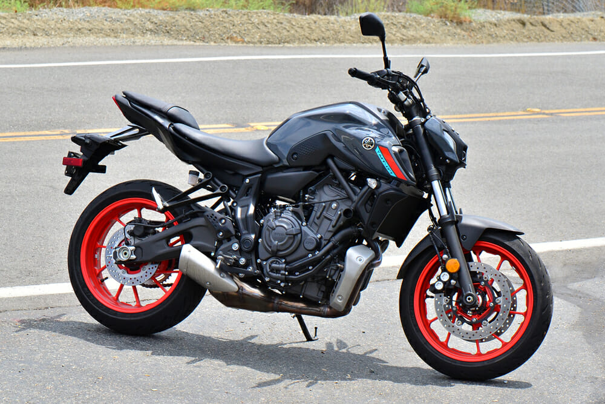
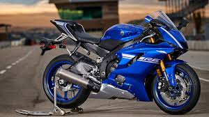

Yamaha Bikes
MT-07
R6


Yamaha is the final of the "Big Four" of Japanese motorcycle manufacturers and by many, regarded as the best one.
Yamaha is by many regarded as even more reliable than the likes of Honda. Yamaha bikes also rival the affordability of those manufactured by Suzuki.
Almost all of the Yamaha models are reliable and powerful in their own right, with most of them being affordable both new and used. From the supersport
look and feel of the R6, R3, R1, and R7 to the more naked look of the MT-07,MT-09 and MT-03. In this article we'll be talking about the R6 and MT-07.
The MT07 captures the look and feel of a naked motorbike perfectly. It is incredibly comfortable to ride on,
offers a sleek design and is very appealing to the eye with the variety of colour schemes available. It comes equipped with a 689cc, four stroke,
parellel twin cylinder, 4 valves per cylinder, liquid cooled engine providing a maximum power of 55kW at 8750 RPM. It comes with a 14L fuel tank capacity.
The MT07 has been dubbed the most successful mid-size hyper naked motorbike. The 2021 model features LED turn signals, the latest generation Michelin 5 tires and
new wider aluminium tapered handlebars.
The R6 has for the longest time been the bike of choice for serious 600cc riders and racers.
It features a four stroke, four cylinder, 16 total valves, liquid cooled engine providing a whopping 87.1kW of power at 14,500 RPM.
This is once again, like the GSXR600, considerably high for a 600cc motorbike. The R6 takes a page out of the R1's book in terms of design
with a bold and aggressive design that is sure to turn heads. It comes with a 17.5L fuel tank capacity, once again, making it heavier, but allowing
for longer journeys before stopping for a refuel. This bike is perfect for street riding and racing and is sure to stand out from the crowd.